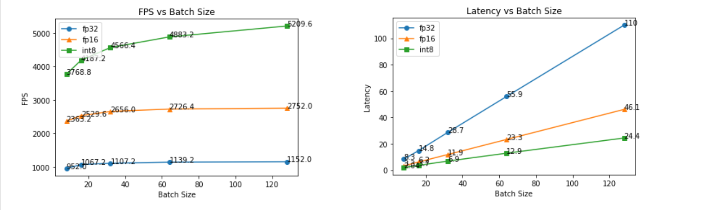

12.3 trtexec 工具使用
本小节介绍trtexec工具的使用，trtexec可以实现onnx模型导出trt模型、耗时分析和模型优化分析等功能，本节将对trtexec的运用进行介绍。
trtexec
trtexec是官方提供的命令行工具，主要用于一下三个方面
- 生成模型序列化文件：由ONNX文件生成 TensorRT 引擎并序列化为 Plan文件/engine文件
- 查看模型文件信息：查看 ONNX文件或 Plan 文件的网络逐层信息
- 模型性能测试：测试 TensorRT 引擎基于随机输入或给定输入下的性能
trtexec提供了大量参数，整体可分为构建和运行两个阶段。
构建阶段常用参数
--onnx=<model>: onnx文件路径
--minShapes=<shapes>,
--optShapes=<shapes>, and
--maxShapes=<shapes>: 当是onnx模型时，可指定batchsize的动态范围。
–-memPoolSize=<pool_spec>: 优化过程可使用的最大内存
--saveEngine=<file>: 保存的文件输出路径
--fp16, --int8, --noTF32, and --best: 指定数据精度
--verbose: 是否需要打印详细信息。默认是不打印详细信息。
--skipInference: 创建并保存引擎文件，不执行推理过程。
--timingCacheFile=<file>: 记录每个tensor的最小最大值、运行时间等,可以用来分析量化效果。
--dumpLayerInfo, --exportLayerInfo=<file>: 打印及保存每一层详细信息
更多高级用法，参考官方文档：https://docs.nvidia.com/deeplearning/tensorrt/developer-guide/index.html#trtexec
运行阶段常用参数
--loadEngine=<file>: 要加载的模型文件
--shapes=<shapes>:指定输入张量的形状
--loadInputs=<specs>: Load input values from files. Default is to generate random inputs.
--warmUp=<duration in ms>, 热身阶段最短运行时间，单位ms
--duration=<duration in seconds>, 测试阶段最短运行时间，单位s
--iterations=<N>: 测试阶段最小迭代次数
--useCudaGraph: 采用 CUDA graph 捕获和执行推理过程
--noDataTransfers: 关闭host与device之间的数据传输
--dumpProfile, --exportProfile=<file>: 打印及保存每一层性能信息
--dumpLayerInfo, --exportLayerInfo=<file>: 打印及保存每一层详细信息
更多高级用法，参考官方文档：https://docs.nvidia.com/deeplearning/tensorrt/developer-guide/index.html#trtexec
案例0：固定batchsize
输出固定batchsize的engine文件，这里需要注意，batchsize的状态需要与ONNX匹配，因此在生成onnx时需要设置好。
trtexec --onnx=resnet50_bs_1.onnx --saveEngine=resnet50_bs_1.engine
案例1: 动态batchsize使用
resnet50_bs_dynamic.onnx 可通过第十一章章生成，或通过百度网盘下载-提取码：whai
trtexec --onnx=resnet50_bs_dynamic.onnx --saveEngine=resnet50_bs_dynamic_1-32-64.engine --timingCacheFile=dynamic-1-32-64.cache --minShapes=input:1x3x224x224 --maxShapes=input:64x3x224x224 --optShapes=input:16x3x224x224
通过下表可知，fp32时，大batchsize带来吞吐量增加不明显，因此可考虑时延的平衡，选择batchsize=8。
| FP32 | 1-8-64 | 1-16-64 | 1-32-64 | 1-64-64 |
|---|---|---|---|---|
| 吞吐量（ FPS） | 952 | 1060 | 1126 | 1139 |
| 时延（ms） | 8.3 | 14.9 | 28.2 | 112 |
案例2：fp32、fp16、int8 性能比较
运行配套代码中的run.bat/run.sh，可以查看log，观察吞吐量、时延的变化。
如下图所示，吞吐量方面
- fp16相较于fp32有约2~3倍提升，int8相较于fp16约2倍提升
- 相同精度时，吞吐量随batchsize增加，但在32后增速不明显。int8随着batchsize增速潜力更大。
时延方面
- 时延随着batchsize是线性增长
- fp32, fp16, int8的时延依次递减一半

案例3：查看层详细信息
通过参数--dumpLayerInfo --exportLayerInfo，可以输出各层详细信息，以及融合情况，还有输入输出张量的名字（Bindings）
trtexec --onnx=resnet50_bs_dynamic.onnx --saveEngine=demo.engine --skipInference --dumpLayerInfo --exportLayerInfo="exportLayerInfo.log"
在exportLayerInfo.log文件中可以看到如下信息，主要包括
各网络层内容，以及融合情况“Reformatting CopyNode for Input Tensor 0 to Conv_0 + Relu_1”
- Reformatting CopyNode 表示 TensorRT 将输入tensor 0 复制(Copy)到 Conv_0 和 Relu_1 两个层进行了融合(Reformatting)。这里的 Reformatting 指的是 TensorRT 在优化网络结构时,会将一些层进行融合,以减少内存拷贝和提高计算效率。CopyNode 则表示插入了一个拷贝层,用于将输入数据复制到融合后新的层中。
- 这种层的融合可以减少内存访问,优化数据流,从而提升推理性能。
Bindings：包括输入输出张量的名称，这个在onnx导出时设定的，在下游python推理代码中也会用到。
{"Layers": ["Reformatting CopyNode for Input Tensor 0 to Conv_0 + Relu_1"
,"Conv_0 + Relu_1"
,"MaxPool_2"
,"Conv_3 + Relu_4"
,"Conv_5 + Relu_6"
...
,"Reformatting CopyNode for Input Tensor 0 to Gemm_121"
,"Gemm_121"
,"reshape_after_Gemm_121"
],
"Bindings": ["input"
,"output"
]}
案例4：verbose中的日志内容
打开verbose开关后，trtexec将输出详细内容，包括以下六大模块：
- 导入模型情况：模型格式、名称
- 参数配置情况：设置了哪些参数进行优化，例如 --fp16等
- 设备情况：当前GPU device具体信息
- 计算图优化细节：详细描述网络层融合情况，计算图优化结果
- 网络层实现方式选择（几千行）：打印每个网络层选择的kernel的过程，挑选耗时最低的方法
- 耗时统计：统计推理耗时时间，包括数据拷贝、推理等耗时的统计值
trtexec --onnx=resnet50_bs_dynamic.onnx --saveEngine=demo.engine --verbose > verbose.log
执行以下命令，可获得日志文件，下面对主要内容进行介绍。
Model Options ：包含导入的模型内容
[08/20/2023-11:59:45] [I] === Model Options ===
[08/20/2023-11:59:45] [I] Format: ONNX
[08/20/2023-11:59:45] [I] Model: resnet50_bs_dynamic.onnx
[08/20/2023-11:59:45] [I] Output:
Build Options：创建trt模型的参数设置
[08/20/2023-11:59:45] [I] === Build Options ===
[08/20/2023-11:59:45] [I] Max batch: explicit batch
[08/20/2023-11:59:45] [I] Memory Pools: workspace: default, dlaSRAM: default, dlaLocalDRAM: default, dlaGlobalDRAM: default
[08/20/2023-11:59:45] [I] minTiming: 1
[08/20/2023-11:59:45] [I] avgTiming: 8
[08/20/2023-11:59:45] [I] Precision: FP32
...
推理设置
[08/20/2023-11:59:45] [I] === Inference Options===
[08/20/2023-11:59:45] [I] Batch: Explicit
[08/20/2023-11:59:45] [I] Input inference shapes: model
[08/20/2023-11:59:45] [I] Iterations: 10
[08/20/2023-11:59:45] [I] Duration: 3s (+ 200ms warm up)
[08/20/2023-11:59:45] [I] Sleep time: 0ms
[08/20/2023-11:59:45] [I] Idle time: 0ms
[08/20/2023-11:59:45] [I] Inference Streams: 1
日志输出设置
[08/20/2023-11:59:45] [I] === Reporting Options ===
[08/20/2023-11:59:45] [I] Verbose: Enabled
[08/20/2023-11:59:45] [I] Averages: 10 inferences
[08/20/2023-11:59:45] [I] Percentiles: 90,95,99
[08/20/2023-11:59:45] [I] Dump refittable layers:Disabled
[08/20/2023-11:59:45] [I] Dump output: Disabled
[08/20/2023-11:59:45] [I] Profile: Disabled
[08/20/2023-11:59:45] [I] Export timing to JSON file:
[08/20/2023-11:59:45] [I] Export output to JSON file:
[08/20/2023-11:59:45] [I] Export profile to JSON file:
设备信息
[08/20/2023-11:59:46] [I] === Device Information ===
[08/20/2023-11:59:46] [I] Selected Device: NVIDIA GeForce RTX 3060 Laptop GPU
[08/20/2023-11:59:46] [I] Compute Capability: 8.6
[08/20/2023-11:59:46] [I] SMs: 30
[08/20/2023-11:59:46] [I] Device Global Memory: 6143 MiB
[08/20/2023-11:59:46] [I] Shared Memory per SM: 100 KiB
[08/20/2023-11:59:46] [I] Memory Bus Width: 192 bits (ECC disabled)
[08/20/2023-11:59:46] [I] Application Compute Clock Rate: 1.702 GHz
[08/20/2023-11:59:46] [I] Application Memory Clock Rate: 7.001 GHz
[03/28/2024-15:01:18] [I] === Device Information ===
[03/28/2024-15:01:20] [I] Available Devices:
[03/28/2024-15:01:20] [I] Device 0: "NVIDIA GeForce RTX 4060 Laptop GPU
[03/28/2024-15:01:20] [I] Selected Device: NVIDIA GeForce RTX 4060 Laptop GPU
[03/28/2024-15:01:20] [I] Selected Device ID: 0
[03/28/2024-15:01:20] [I] Compute Capability: 8.9
[03/28/2024-15:01:20] [I] SMs: 24
[03/28/2024-15:01:20] [I] Device Global Memory: 8187 MiB
[03/28/2024-15:01:20] [I] Shared Memory per SM: 100 KiB
[03/28/2024-15:01:20] [I] Memory Bus Width: 128 bits (ECC disabled)
[03/28/2024-15:01:20] [I] Application Compute Clock Rate: 1.89 GHz
[03/28/2024-15:01:20] [I] Application Memory Clock Rate: 8.001 GHz
补充一个4060的显卡信息，可以看到SMs是少于3060的，这个与基本厂商的刀法有关。虽然是4060的设备，但是计算性能比不上3060设备。因为里边的核心——SMs是少于3060的30个SM的。“SMs” 代表 “Streaming Multiprocessors”（流处理器），流处理器是执行 CUDA 核心的基本单元，SM越大算力越大。
对于RTX 4060 Laptop，官方显示有3072个CUDA核心，对应24个SM，即一个SM有128个CUDA核心。
对于RTX 3060 Laptop，官方显示有3840个CUDA核心，对应30个SM，也是符合一个SM有128个CUDA核心的。
4060不仅流处理器少，带宽也低，128 bits VS 192 bits，唯一的优点就是8GB VS 6GB了。
ONNX模型加载及创建
解析模型耗时0.14秒，总共126层，后续trt会针对该模型进行优化。
[08/20/2023-11:59:52] [I] [TRT] ----------------------------------------------------------------
[08/20/2023-11:59:52] [I] [TRT] Input filename: resnet50_bs_dynamic.onnx
[08/20/2023-11:59:52] [I] [TRT] ONNX IR version: 0.0.7
[08/20/2023-11:59:52] [I] [TRT] Opset version: 13
[08/20/2023-11:59:52] [I] [TRT] Producer name: pytorch
[08/20/2023-11:59:52] [I] [TRT] Producer version: 1.12.0
[08/20/2023-11:59:52] [I] [TRT] Domain:
[08/20/2023-11:59:52] [I] [TRT] Model version: 0
[08/20/2023-11:59:52] [I] [TRT] Doc string:
[08/20/2023-11:59:52] [I] [TRT] ----------------------------------------------------------------
[08/20/2023-11:59:52] [V] [TRT] Plugin creator already registered - ::BatchedNMSDynamic_TRT version 1
[08/20/2023-11:59:52] [V] [TRT] Plugin creator already registered - ::BatchedNMS_TRT version 1
[08/20/2023-11:59:52] [V] [TRT] Plugin creator already registered - ::BatchTilePlugin_TRT version 1
...
[08/20/2023-11:59:52] [V] [TRT] Adding network input: input with dtype: float32, dimensions: (-1, 3, 224, 224)
[08/20/2023-11:59:52] [V] [TRT] Registering tensor: input for ONNX tensor: input
[08/20/2023-11:59:52] [V] [TRT] Importing initializer: fc.weight
[08/20/2023-11:59:52] [V] [TRT] Importing initializer: fc.bias
[08/20/2023-11:59:52] [V] [TRT] Importing initializer: onnx::Conv_497
[08/20/2023-11:59:52] [V] [TRT] Importing initializer: onnx::Conv_498
[08/20/2023-11:59:52] [V] [TRT] Importing initializer: onnx::Conv_500
...
[08/20/2023-11:59:52] [V] [TRT] Searching for input: onnx::Conv_497
[08/20/2023-11:59:52] [V] [TRT] Searching for input: onnx::Conv_498
[08/20/2023-11:59:52] [V] [TRT] Conv_0 [Conv] inputs: [input -> (-1, 3, 224, 224)[FLOAT]], [onnx::Conv_497 -> (64, 3, 7, 7)[FLOAT]], [onnx::Conv_498 -> (64)[FLOAT]],
[08/20/2023-11:59:52] [V] [TRT] Convolution input dimensions: (-1, 3, 224, 224)
[08/20/2023-11:59:52] [V] [TRT] Registering layer: Conv_0 for ONNX node: Conv_0
...
[08/20/2023-11:59:52] [V] [TRT] Marking output_1 as output: output
[08/20/2023-11:59:52] [I] Finished parsing network model. Parse time: 0.141545
[08/20/2023-11:59:52] [V] [TRT] After dead-layer removal: 126 layers
[08/20/2023-11:59:52] [V] [TRT] Graph construction completed in 0.0015515 seconds.
计算图优化
优化计算图，可以使得推理速度更快，在本案例中，将模型从126层优化到57层
[08/20/2023-11:59:52] [I] [TRT] Graph optimization time: 0.0150853 seconds.
计算图优化中采用了大量的层融合，融合的原理是尽可能地合并不同层之间相关的计算，避免不必要的中间tensor生成, 减少内存读写, 降低计算消耗，最终提高推理效率
常见的优化方法如下：
ConstShuffleFusion: 在fc层的bias中使用,可以将常量shuffle到bias数据中,减少冗余计算。
ShuffleShuffleFusion: 在flatten层中使用,可以减少shuffle的计算次数。
- ConvReshapeBiasAddFusion: 将conv层的输出reshape,然后进行bias add的计算融合到一起,减少运算耗时。
- ConvReluFusion: 将conv层和后续的Relu激活函数层融合,可以减少一次Relu的计算。
- ConvEltwiseSumFusion: 将conv层和element-wise add层融合,避免重复计算。
- ReduceToPoolingFusion: 将reduce层修改为pooling层,减少运算消耗。
- ConcatReluFusion: 将concat层和relu层融合,减少relu计算次数。
- BiasSoftmaxFusion: 融合bias层和softmax层,减少冗余计算。
[08/20/2023-11:59:52] [V] [TRT] Running: ConstShuffleFusion on fc.bias
[08/20/2023-11:59:52] [V] [TRT] ConstShuffleFusion: Fusing fc.bias with (Unnamed Layer* 129) [Shuffle]
[08/20/2023-11:59:52] [V] [TRT] After Myelin optimization: 125 layers
...
[08/20/2023-11:59:52] [V] [TRT] After dupe layer removal: 57 layers
[08/20/2023-11:59:52] [V] [TRT] After final dead-layer removal: 57 layers
[08/20/2023-11:59:52] [V] [TRT] After tensor merging: 57 layers
[08/20/2023-11:59:52] [V] [TRT] After vertical fusions: 57 layers
[08/20/2023-11:59:52] [V] [TRT] After dupe layer removal: 57 layers
[08/20/2023-11:59:52] [V] [TRT] After final dead-layer removal: 57 layers
[08/20/2023-11:59:52] [V] [TRT] After tensor merging: 57 layers
[08/20/2023-11:59:52] [V] [TRT] After slice removal: 57 layers
[08/20/2023-11:59:52] [V] [TRT] After concat removal: 57 layers
[08/20/2023-11:59:52] [V] [TRT] Trying to split Reshape and strided tensor
[08/20/2023-11:59:52] [I] [TRT] Graph optimization time: 0.0150853 seconds.
各网络层实现方式选择
网络层具体的实现有多种方式，例如不同的底层库、不同的实现算法、不同的算法策略，在TensorRT中会把所有的实现方式跑一遍，挑选速度最优的实现方式。
在实现网络层的过程中，runner和tactic是TensorRT中用于实现layer的关键组件。
- runner代表着一种实现layer的算法或代码路径。例如,卷积层可以通过cudnn、cublas或者TensorRT自身的cask实现。runner封装了具体的实现算法。
- tactic代表具体的实现方案。每个runner下面可以有多个tactic,对应不同的优化方法。例如cask convolution runner下面可以有基于tensor core的tactic,或是各种tile size的tactic等等。tactic包含了针对特定layer进行各种优化的代码实现。
所以TensorRT通过组合不同的runner和tactic,就可以得到层的多种实现方式。然后通过Auto Tuner来测试不同组合的性能,选择出最优的实现。
例如,对于一个卷积层:
- runner可以是cudnn、cublas、cask convolution等
- cask convolution下面可以有基于tensor core的tactic,tile size为32x32或64x64的tactic等等
最终会选择出cask convolution + 64x64 tile size这个tactic组合作为最优实现
在本日志中，第一个runner跑的是conv_0 + Relu_1，最终选择的Tactic Name是 0x9cb304e2edbc1221，耗时0.040秒。
[08/20/2023-11:59:52] [V] [TRT] =============== Computing costs for
[08/20/2023-11:59:52] [V] [TRT] *************** Autotuning format combination: Float(150528,50176,224,1) -> Float(802816,12544,112,1) ***************
[08/20/2023-11:59:52] [V] [TRT] --------------- Timing Runner: Conv_0 + Relu_1 (CaskConvolution[0x80000009])
[08/20/2023-11:59:52] [V] [TRT] Tactic Name: sm50_xmma_conv_fprop_fused_conv_act_fp32_NCHW_fp32_NCHW_KCRS_fp32_fp32_fp32_Accfloat_1_1_cC1_dC1_srcVec1_fltVec1_1_TP3_TQ4_C1_R7_S7_U2_V2 Tactic: 0x0a617a3531b5b6dc Time: 0.102619
[08/20/2023-11:59:52] [V] [TRT] Tactic Name: sm50_xmma_conv_fprop_fused_conv_act_fp32_NCHW_fp32_NCHW_KCRS_fp32_fp32_fp32_Accfloat_1_1_cC1_dC1_srcVec1_fltVec2_2_TP3_TQ4_C1_R7_S7_U2_V2 Tactic: 0x520e893be7313ed2 Time: 0.0999131
...
[08/20/2023-11:59:52] [V] [TRT] Conv_0 + Relu_1 (CaskConvolution[0x80000009]) profiling completed in 0.0647644 seconds. Fastest Tactic: 0x9cb304e2edbc1221 Time: 0.0402286
最终trt将57个层都进行了Computing costs，得到各网络层的最优实现方案。
除了网络层，还需要reformat layer，它的作用是改变tensor的格式,将前一层的输出重新排布成后一层所需的格式。这样就可以使得两层之间的tensor兼容,然后进行融合。
例如：Conv_0 + Relu_1层需要[50176,1:4,224,1]格式的tensor作为输入，而输入层输出的是[150528,50176,224,1]格式，所以在输入层和Conv_0层之间加入了reformat layer,将tensor重新排布成Conv层需要的格式。
最终添加了25个reformat layer，模型变为了82层。
...
[08/20/2023-12:00:07] [V] [TRT] Adding reformat layer: Reformatted Input Tensor 0 to Gemm_121 (onnx::Flatten_493) from Float(512,1:4,512,512) to Float(2048,1,1,1)
[08/20/2023-12:00:07] [V] [TRT] Formats and tactics selection completed in 15.1664 seconds.
[08/20/2023-12:00:07] [V] [TRT] After reformat layers: 82 layers
[08/20/2023-12:00:07] [V] [TRT] Total number of blocks in pre-optimized block assignment: 82
[08/20/2023-12:00:07] [I] [TRT] Detected 1 inputs and 1 output network tensors.
存储空间占用情况
介绍各网络层存储占用情况，以及汇总，例如本案例，engine的GPU占用是107MB
...
[08/20/2023-12:00:07] [V] [TRT] Layer: Conv_116 + Add_117 + Relu_118 Host Persistent: 7200 Device Persistent: 0 Scratch Memory: 0
[08/20/2023-12:00:07] [V] [TRT] Layer: GlobalAveragePool_119 Host Persistent: 4176 Device Persistent: 0 Scratch Memory: 0
[08/20/2023-12:00:07] [V] [TRT] Layer: Gemm_121 Host Persistent: 6944 Device Persistent: 0 Scratch Memory: 0
[08/20/2023-12:00:07] [V] [TRT] Skipped printing memory information for 26 layers with 0 memory size i.e. Host Persistent + Device Persistent + Scratch Memory == 0.
[08/20/2023-12:00:07] [I] [TRT] Total Host Persistent Memory: 331696
[08/20/2023-12:00:07] [I] [TRT] Total Device Persistent Memory: 22016
[08/20/2023-12:00:07] [I] [TRT] Total Scratch Memory: 4608
[08/20/2023-12:00:07] [I] [TRT] [MemUsageStats] Peak memory usage of TRT CPU/GPU memory allocators: CPU 18 MiB, GPU 107 MiB
engine构建情况
对完成好的engine各网络层、网络层对应的kernel选择情况进行打印。
可以看到engine的构建耗时15.3秒
[08/20/2023-12:00:07] [V] [TRT] Engine generation completed in 15.3167 seconds.
[08/20/2023-12:00:07] [V] [TRT] Deleting timing cache: 214 entries, served 528 hits since creation.
[08/20/2023-12:00:07] [V] [TRT] Engine Layer Information:
Layer(Reformat): Reformatting CopyNode for Input Tensor 0 to Conv_0 + Relu_1, Tactic: 0x00000000000003e8, input (Float[1,3,224,224]) -> Reformatted Input Tensor 0 to Conv_0 + Relu_1 (Float[1,3:4,224,224])
Layer(CaskConvolution): Conv_0 + Relu_1, Tactic: 0x9cb304e2edbc1221, Reformatted Input Tensor 0 to Conv_0 + Relu_1 (Float[1,3:4,224,224]) -> onnx::MaxPool_323 (Float[1,64:4,112,112])
推理耗时统计
进行10次推理，依次得到以下信息，同时相应的统计值。
- Throughput：模型的推理吞吐量，以每秒推理数量（QPS）为单位。实际图片量需要乘以batchsize。
- Latency：模型一次推理的延迟时间统计信息，包括最小值、最大值、平均值、中位数和百分位数（90%、95%和99%）。
- Enqueue Time：将数据传输到GPU的时间统计信息，
- H2D Latency：将主机数据传输到GPU的延迟时间统计信息，
- GPU Compute Time：模型在GPU上运行的计算时间统计信息
- D2H Latency：从GPU将数据传输回主机的延迟时间统计信息
- Total Host Walltime：模型推理的总时间，包括传输数据、计算和传输数据回主机的时间。
- Total GPU Compute Time：模型在GPU上的总计算时间。
[08/20/2023-12:00:11] [I] === Performance summary ===
[08/20/2023-12:00:11] [I] Throughput: 502.107 qps
[08/20/2023-12:00:11] [I] Latency: min = 1.88583 ms, max = 2.96844 ms, mean = 1.93245 ms, median = 1.91833 ms, percentile(90%) = 1.9592 ms, percentile(95%) = 1.98364 ms, percentile(99%) = 2.34845 ms
[08/20/2023-12:00:11] [I] Enqueue Time: min = 0.312988 ms, max = 1.77197 ms, mean = 0.46439 ms, median = 0.390869 ms, percentile(90%) = 0.748291 ms, percentile(95%) = 0.836853 ms, percentile(99%) = 1.10229 ms
[08/20/2023-12:00:11] [I] H2D Latency: min = 0.0714111 ms, max = 0.225464 ms, mean = 0.0769845 ms, median = 0.0737305 ms, percentile(90%) = 0.088623 ms, percentile(95%) = 0.0947266 ms, percentile(99%) = 0.112671 ms
[08/20/2023-12:00:11] [I] GPU Compute Time: min = 1.80939 ms, max = 2.86005 ms, mean = 1.8518 ms, median = 1.84009 ms, percentile(90%) = 1.87183 ms, percentile(95%) = 1.89734 ms, percentile(99%) = 2.22314 ms
[08/20/2023-12:00:11] [I] D2H Latency: min = 0.00317383 ms, max = 0.0220947 ms, mean = 0.00366304 ms, median = 0.00341797 ms, percentile(90%) = 0.00390625 ms, percentile(95%) = 0.00402832 ms, percentile(99%) = 0.00488281 ms
[08/20/2023-12:00:11] [I] Total Host Walltime: 3.00334 s
[08/20/2023-12:00:11] [I] Total GPU Compute Time: 2.79252 s
[08/20/2023-12:00:11] [I] Explanations of the performance metrics are printed in the verbose logs.
[08/20/2023-12:00:11] [V]
[08/20/2023-12:00:11] [V] === Explanations of the performance metrics ===
[08/20/2023-12:00:11] [V] Total Host Walltime: the host walltime from when the first query (after warmups) is enqueued to when the last query is completed.
[08/20/2023-12:00:11] [V] GPU Compute Time: the GPU latency to execute the kernels for a query.
[08/20/2023-12:00:11] [V] Total GPU Compute Time: the summation of the GPU Compute Time of all the queries. If this is significantly shorter than Total Host Walltime, the GPU may be under-utilized because of host-side overheads or data transfers.
[08/20/2023-12:00:11] [V] Throughput: the observed throughput computed by dividing the number of queries by the Total Host Walltime. If this is significantly lower than the reciprocal of GPU Compute Time, the GPU may be under-utilized because of host-side overheads or data transfers.
[08/20/2023-12:00:11] [V] Enqueue Time: the host latency to enqueue a query. If this is longer than GPU Compute Time, the GPU may be under-utilized.
[08/20/2023-12:00:11] [V] H2D Latency: the latency for host-to-device data transfers for input tensors of a single query.
[08/20/2023-12:00:11] [V] D2H Latency: the latency for device-to-host data transfers for output tensors of a single query.
[08/20/2023-12:00:11] [V] Latency: the summation of H2D Latency, GPU Compute Time, and D2H Latency. This is the latency to infer a single query.
[08/20/2023-12:00:11] [I]
案例5：trt模型推理
通过推理trt模型，可以查看网络层信息、网络层推理耗时情况
trtexec --loadEngine=resnet50_bs_128_fp32.engine --batch=128 --useCudaGraph --dumpProfile --dumpLayerInfo > inference.log
可以看到，卷积层耗时较大
8/20/2023-17:51:29] [I] === Profile (32 iterations ) ===
[08/20/2023-17:51:29] [I] Layer Time (ms) Avg. Time (ms) Median Time (ms) Time %
[08/20/2023-17:51:29] [I] Reformatting CopyNode for Input Tensor 0 to Conv_0 + Relu_1 18.53 0.5790 0.5765 0.6
[08/20/2023-17:51:29] [I] Conv_0 + Relu_1 116.65 3.6453 3.6336 3.6
[08/20/2023-17:51:29] [I] MaxPool_2 51.21 1.6004 1.6005 1.6
小节
本节介绍了trtexec基础用法，可以通过trtexec实现onnx模型转trt模型，并且可以进行动态batchsize设置、半精度量化的选择。
更全面用法推荐查看帮助文档以及官方文档。